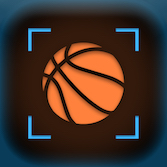

Julian Weiss
iOS entrepreneur and design pragmatist.
I love music & making apps,
hire me to make yours!
📬
twitter
my github
walden.nyc
🖍 medium
donate 🗳
🗞 resumé
⌄
Submarine is a feature-packed, community-driven Reddit app. Designed and developed by myself for almost a year.
Available on iOS and TestFlight.
Smock is a powerful responsive web mockup tool I helped build in 2016. My first Swift and first OS X app!
On Mac App Store.
Giffage is a the world's best all-in-one GIF keyboard. I built the navigation system for this in the Summer of 2015.
Available on iOS.
REVUU is a brilliant startup reinventing the future of the magazine. After joining as an intern thru undergrad at the University of Rochester, I am now the CTO.
Available on iOS and Web.
Flogg is an innovative commerce platform for friends. I helped build this as a part of the Flogg team in NYC.
Available on iOS.
Birdie is a revolutionary social restaurant discovery platform created by
Walden.NYC
. Coming Summer 2016.

DribbleUp is the first basketball tracking app, a breakthrough technology with its own custom basketball. I have been the lead of iOS since 2015.
Available on TestFlight.
Cold Open is a super intuitive TV show app I helped build in the Summer of 2015 as a part of The Appical.
Available on iOS.
Pianote is a streamlined, intelligent musicianship app. Learn, practice, and perform your music using your iPhone.
Beta testing on TestFlight.